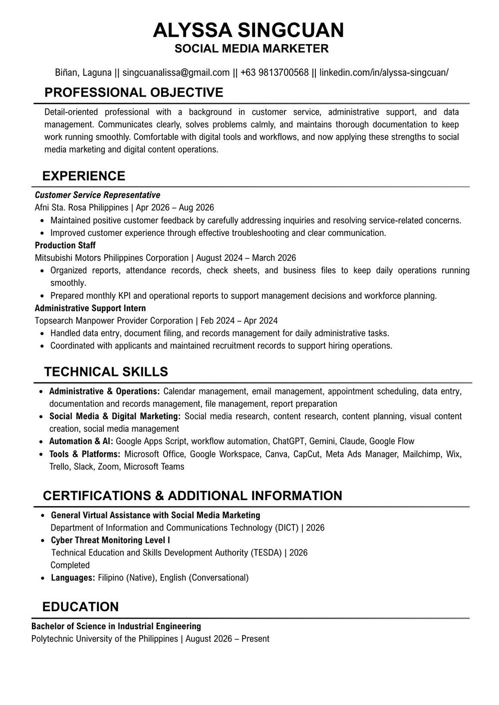

I bring fresh ideas to the digital spaces
Social media management + virtual assistance for growing brands.
Selected work
Posts, graphics, and the systems behind them. Open any project for the details.
Organized and reliable.
With a background in administrative support and digital operations, I specialize in streamlining workflows and managing complex data with precision. My approach blends meticulous attention to detail with a creative, editorial eye for organization.
Whether it’s managing spreadsheets, organizing emails, or handling social media, I am dedicated to helping you reclaim your time and focus on what matters most. My continuous learning journey ensures I stay at the forefront of modern digital tools and best practices.
Organized approach
Clear systems, tidy files and structured plans keep every task on track.
Attention to detail
Careful proofreading and double-checked data in every caption and spreadsheet.
Creative execution
Polished visuals and thoughtful content that reflect a premium brand.
Continuous learning
Always exploring new tools, trends and best practices to grow my skills.
Training
- General Virtual Assistance with Social Media MarketingDICT · 2026
- Cyber Threat Monitoring Level ITESDA · 2026
Tools
Let’s make something good.
singcuanalissa@gmail.comI’m always looking for new opportunities to help businesses and individuals thrive. Have a project in mind, or just want to say hello?
